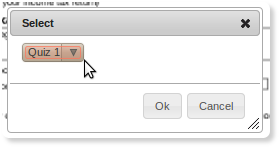

Pages
Using Pages
All workspace content is organized into binders and pages.
Create New Page
-
Click on the new page button on the main toolbar to reveal menu options:
- Select the type of page your wish to create.
-
Enter a name for your page and click the ok button:
-
The new page will be created with a default view:
- For navigation and other manipulations of pages please see toolbar description.
Rename Page
-
Right-click on the page in the navigation panel to reveal menu options:
- Select "Rename".
Delete Page
-
Right-click on the page in the navigation panel to reveal menu options:
- Select "Remove".
Embed Code
If you wish to embed this page into an external web page, use this embed code. Not that the page must have access control set to public for the embed to work. See security section for access control settings.
-
Right-click on the page in the navigation panel to reveal menu options:
- Select the "Embed Code".
-
Specify the size of your embed then copy & paste the resulting code into your web page:
Get Page URL
Use the page URL to easily refer others to this page. If you wish to share the page with other group members then simply send them the URL. This URL could also be used to link to this page from an external web page. Note that all necessary access controls must be set for others to be able to access a page via URL, please see access control section for details.
-
Right-click on the page in the navigation panel to reveal menu options:
- Select the "Get Page URL".
-
Copy the url:
Submit Page
A page, like a binder, can also be submitted as a completed task into the tasks queue. For instances a page could contain a completed assignment.
-
Right-click on the page in the navigation panel to reveal menu options:
- Select the "Submit".
-
Select the task/assignment to which you wish to submit the binder:
